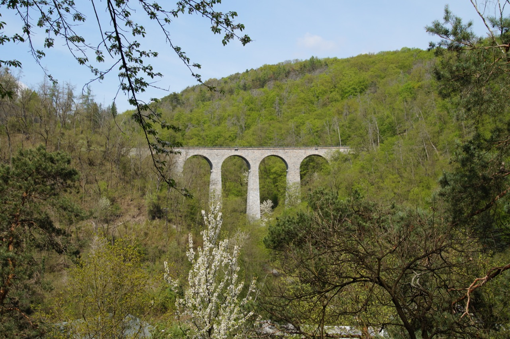

Z Prahy se dá za chvíli dostat do úplně jiné krajiny. Za Davlí se trať přimkne k Sázavě a mezi zastávkami se střídají skály, tunely a chatové osady. Tady není vlak jen doprava na začátek výletu.
Jak si výlet poskládat
-
Vyjeď z Prahy
Vyhledej spoj směrem do Čerčan přes Vrané nad Vltavou. Pozor na to, že ve Vraném se trať větví: vlak do Dobříše tě k Žampachu nedoveze.
-
Nech si čas kolem Jílového
Pro pohled na viadukt zvenku naplánuj samostatnou procházku. Stanice Jílové u Prahy neleží přímo v centru města; pěší trasu i převýšení si předem prohlédni v mapě.
-
Dokonči železniční okruh
Pokračuj přes Týnec nad Sázavou do Čerčan. Zpátky do Prahy můžeš zvolit trať přes Benešovsko a Říčany, takže nepojedeš celou cestu stejně.
Proč právě sem
Největší lákadlo je samotná jízda údolím Sázavy. Pokud chceš jen nenáročný den, projeď celou trasu a pěší část zkrať na zastávku na jídlo.
Co ověřit před odjezdem
Návrh počítá s běžnými vlaky. Historické jízdy jsou samostatná možnost, jejich termíny je potřeba ověřit.
Uvedená trasa je návrh výletu, nikoli potvrzení provozu pro konkrétní den. Pěší úseky si přizpůsob podle mapy, počasí a času do návratu.
Podklady zkontrolovány .